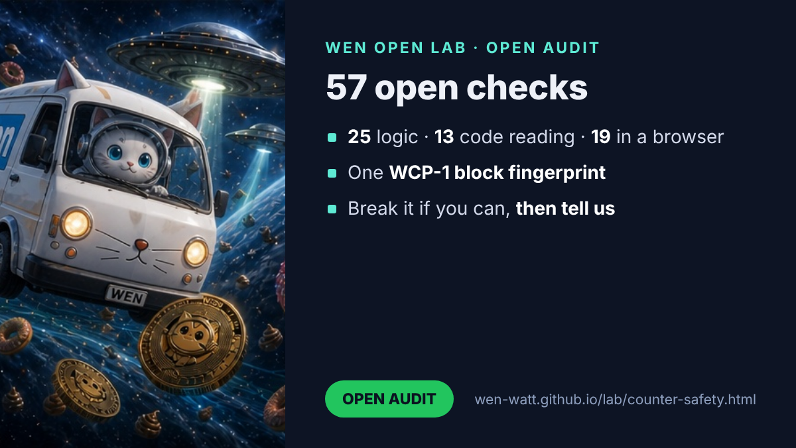

7단계: Wen Counter프로토타입 · devnet
- 0 · 로드맵
- 1 · 영수증과 보증
- 2 · 크리에이터 로열티
- 3 · B2B 인보이스
- 4 · 결제 브리지
- 5 · 시뮬레이터
- 6 · Devnet: 직접 재현
- 7 · 계산대
- 7.1 · 안전
- ✓ · 신뢰 사슬
- ★ · 이점과 활용
- ✎ · 열 가지 해설
- ▶ · 영상
- ? · 독자 발견
- 8 · 상점: 플러그인과 스킬
한눈에 · 모두에게 무료
어이, 어디 가? 🐾
2024년 미국 가맹점은 카드 수수료로 1,872억 달러를 냈습니다. 3달러짜리 커피 한 잔에서 카드가 12.9%를 가져갈 수도 있습니다. 여기서는 계산대 비용이 0이고, 판매당 수수료가 없으며, 구매자의 지갑이 Solana 네트워크 수수료만 냅니다: 5,000 lamports.
출시할 앱도, 빌릴 단말기도, 지킬 카드 정보도, 중간에 끼는 사람도 없습니다. 계산대 휴대폰의 웹 페이지 하나. 가져가고, 확인하고, 실행하세요.
무료오픈 코드앱스토어 없음카드 정보 없음중개인 없음약속이 아니라 측정한 절약
고양이 한 마리가 먼 데서 왔어요,
소매 속엔 아무 속임수 없이.
공짜 계산대를 가져왔고
믿을 수 있는 수수료도 함께.
몫도, 카드도, 앱도 원하지 않아요:
그저 쓰다듬고, 받으세요.


나눌 수 있는 카드. 화면은 devnet 테스트 실행에서 가져왔고, 카드의 QR은 일부러 흐리게 처리했습니다.
왜 중요한가
구매자와 상점 사이의 모든 층이 제 몫을 가져갑니다. 결제 대행사, 카드 네트워크, 단말기 임대, 플랫폼. 세금을 내고 직원을 고용하는 상점에게 이것은 성장에 관한 어떤 결정보다도 먼저 노동에서 빠져나가는 돈입니다. Wen Counter는 직접 연결되는 마이크로 시스템입니다. 구매자가 상점에 지불하고, 체인이 확인하고, 상점이 기록을 보관합니다. 판매의 유일한 비용은 Solana 네트워크 수수료이며, 구매자의 지갑이 냅니다. 계산대 자체는 무료입니다.
장부를 쓰는 사업자라면: 모든 판매에 온체인 서명이 있고, 회계사에게 CSV로 내보낼 수 있는 장부에 들어갑니다.
나만의 계산대, 다섯 단계
- 도구를 챙기세요. 계산대의 휴대폰이나 태블릿에서 계산대를 열거나 키트를 내려받으세요.
- 믿을 수 있는 Solana 지갑 앱(Jupiter, Phantom, Solflare, Backpack, Squads)에서 지갑을 만드세요.
- 설정에서 등록하세요: 상점 이름, 지갑 이름, 네트워크(먼저 devnet).
- 수신 주소를 붙여 넣으세요. 계산대가 온체인에서 확인합니다. 이것이 당신의 열린 무료 계산대입니다.
- 돈은 내 지갑에서 관리하세요: 환불, 구매, 이체, 세금 신고용 기록.


장난감 가게, 그릴집, 피자집, 옷 가게: 모두 같은 무료 계산대. 소식 읽기.
기업과 체인점을 위해
| 단계 | 지갑 | 누가 | 언제 |
|---|---|---|---|
| 부서나 계산대 | 각각 수신 지갑 하나, 설정에서 이름 지정(가구, 장난감, 정원) | 계산대가 결제를 받음, 수신 전용 | 판매마다 |
| 지점 | 지점마다 계산대 지갑 하나 | 책임 매니저가 그날의 매출과 환불을 처리 | 하루 동안 |
| 회사 | 중앙 지갑 하나, 예를 들어 Squads 멀티시그 | 재무팀, 자금 이동에 여러 승인 필요 | 그날 매출이 매일 저녁 도착 |
계산대 하나, 지갑 1부터 X까지, 각각 라벨이 있습니다. 계산원이 판매가 어느 지갑으로 갈지 고르고, 장부는 지갑별로 걸러 보며, 내보내기 파일에는 지갑 이름과 주소가 담깁니다. 인터페이스는 엄격하게 유지되고, 코드는 필요한 어떤 변경에도 열려 있습니다.

설정 PIN: 지갑은 소유자가 정한다
회사는 계산대 휴대폰에 계산대를 올리고 수신 지갑을 설정합니다. 설정은 PIN으로 잠겨 있어 매니저나 계산원이 자기 지갑을 넣을 수 없습니다. 첫 PIN은 배포 매개변수입니다(counter-deploy.js, 기본값은 간단한 1111). 소유자는 처음 시작한 직후 설정에서 새 PIN을 정합니다. 설정을 나가면 다시 잠기고, 다섯 번 틀리면 30초 동안 멈추며, 장부를 지울 때도 PIN이 필요합니다. PIN은 기기에 솔트를 더한 SHA-256으로만 저장됩니다.
PIN을 잊으셨나요? 기기에 앱을 다시 설치하고, 수신 지갑을 다시 입력하고, 새 PIN을 정하세요. 간단하고 안전한 흐름입니다. 온체인에서는 아무것도 잃지 않고, 직원이 몰래 지갑을 바꿀 수도 없습니다. 재설치하면 계산대에 지갑이 하나도 없게 되고, 수신 주소는 모든 QR에 표시되며, 매출이 회사 지갑으로 들어오지 않게 되므로 바꿔치기는 들킬 수밖에 없습니다.

짜잔: 바로 쓰는 나만의 결제 수납 장치. 나만의 Wen Counter.

계산대가 하는 일
| 기능 | 작동 방식 | 결정은 누구에게 |
|---|---|---|
| 통화 | 설정에서 이 순서로 고르세요: USDC, SOL, WEN, JUP. USDT는 선택, 그 밖의 SPL 토큰은 민트 주소로. 메인넷 전용 토큰은 devnet에서 회색으로 표시됩니다. 판매 전에 토큰의 소수 자릿수를 체인에서 읽어 옵니다. | 무엇을 받을지 상점이 결정 |
| 여러 지갑 | 지갑 #1(기본)과 지갑 #2..X, 각각 유형(Department, Branch, Till, Tips, Online, Events, Other)과 이름이 있습니다: #2 · Department · Furniture, #4 · Tips · Bar tips. 각 지갑은 온체인에서 확인하며, 결제는 그 판매에 고른 지갑을 기준으로 검증합니다. | 설정, 소유자가 |
| 설정 PIN | 지갑과 설정은 PIN으로만 열립니다. 첫 PIN은 배포 파일에서 오고(기본 1111) 소유자가 바꿉니다. 잊었다면: 재설치, 지갑 입력, 새 PIN 설정. | 기기 소유자 |
| 판매 메모 | 무엇을 위한 것인지, 상품 코드나 이름, 혹은 비워 둬도 됩니다. 장부, 영수증, CSV에 들어갑니다. 구매자의 지갑이 지원하면 결제와 함께 전달되고(Solana Pay message와 공개되는 온체인 memo), 지원하지 않으면 상점 쪽에만 남습니다. | 계산원, 판매마다 |
| 본사 보기 | 장부는 지갑과 토큰별로 판매를 합산하고, CSV에는 지갑 번호, 유형, 이름, 주소가 담깁니다. 모든 지갑은 누구나 블록 익스플로러에서 볼 수도 있습니다. | 재무팀, 지갑을 근거로 |
| 구매자 영수증 | "결제 완료" 후 구매자가 고릅니다: 영수증 QR(트랜잭션 링크), 영수증 텍스트, 또는 1단계의 영수증 NFT. 세무 영수증이 아닙니다: 계산대는 단순한 집계 도구이지 세무 장치가 아닙니다. 해당 국가의 영수증 규정을 따르세요. | 구매자와 상점 |
| 환불 | 판매보다 드뭅니다. 상점 지갑에서 보내는 새 결제로 처리하며, ↩ 버튼이 메모용으로 refund:와 원래 트랜잭션 ID를 복사하므로 누구나 두 건을 맞춰 볼 수 있습니다. 큰 회사는 자체 규칙을 따릅니다. | 지갑 앱 안에서 |
| 내보내기 | 오늘, 이번 주, 이번 달, 올해, 작년, 분기(Q1–Q4) 또는 임의 기간의 CSV. 지갑 이름, 주소, 서명, 네트워크 수수료 포함. | 회계사 |
| 언어 | 영어, 이탈리아어, 중국어, 한국어. 인터페이스의 모든 단어는 핵심 지문에 묶인 사전 파일 하나(counter-i18n.js)에 있으므로, 번역이 핵심을 바꾸는 일은 없습니다. | — |
규모를 키우기 전 일곱 가지 답
풀리지 않은 문제가 아닙니다. 모든 상점에 드리는 답을 한 번에 적어 두었으니, 각자 스스로 판단하세요.
- 누구를 위한 것인가. 대부분의 사람은 아직 USDC가 든 Solana 지갑이 없고, 어떤 코드도 그것을 바꾸지 못합니다. 여기서 대중 채택을 말하는 사람은 없습니다. 첫 사용자는 크립토 커뮤니티, 이벤트, 자기 고객을 위한 온라인 상점입니다. 이 솔루션은 검색에서도, AI 어시스턴트가 읽는 파일에서도 모두에게 열려 있습니다. 쓸모 있는 곳에서 사람들이 쓸 것입니다.
- 여러 부서, 하나의 화면. 부서가 여럿이거나 받는 돈을 나누고 싶으신가요? 번호, 유형, 이름으로 지갑을 추가하세요:
#2 · Department · Furniture,#3 · Branch · Downtown,#4 · Tips · Bar tips. 장부가 지갑별로 합산하고(본사 보기), 모든 지갑은 블록 익스플로러에서 볼 수 있습니다. - 실제 회사: RPC, 지갑 쪽, 회계. 지갑과 결제가 많으면 자체 RPC 엔드포인트가 필요합니다. 공개 엔드포인트는 호출 빈도가 제한되니까요. 지갑 쪽도 준비하세요. 누가 어느 지갑을 갖고, 누가 이체를 승인하며, 그날 매출이 어떻게 옮겨지는지. 회사에게 이것은 지갑을 회계에 포함한다는 뜻이며, 일주일에 한 번 결제를 받고 혼자 신고하는 개인 판매자와는 다릅니다. 지갑을 써도 되는지 회계사나 재무 책임자와 확인하세요. 금지되지 않았을 수도 있지만, 절차와 신고에는 주의가 필요합니다. 이것은 조언이 아니라 유용한 팁입니다.
- 세무 규칙. 계산대는 아무것도 신고하지 않습니다. 현대적인 링크의 새로운 장치입니다. 구매자는 계산대가 만든 QR로 휴대폰 결제를 하고, 당신은 받습니다. 소상공인에게 이상적이고, 큰 사업체에도 쓸 만하며, 아주 경제적이고 무료입니다. 세무 절차는 회계사와 함께 살펴보세요. 규정상 금액을 신고할 수 있다면, 기간마다 지갑 내역을 보관하고, 수입을 신고하고, 받은 것과 환불한 것을 보여 주세요. 회계사에게 지갑으로 자금을 받고 신고하고 싶다고 설명하세요. 사업과 세금에 대한 올바르고 현대적이며 투명한 접근입니다. 회계사가 좋다고 하면 키워 보세요. 흥미로운 솔루션이 손에 있습니다.
- 책임과 공개 감사. 솔루션은 본인 책임으로 사용합니다. 우리는 장치를 줄 뿐, 당신이 그것으로 무엇을 하고 무엇을 바꾸는지 모릅니다. 장치 자체는 돈을 가져가지도, 보관하지도, 수수료를 받지도 않습니다. 네트워크의 절차가 있고 그 절차만 씁니다. 당신의 지갑이 있고 당신이 직접 씁니다. 감사는 공개되어 있습니다. 코드를 읽고, 57개 검사를 다시 돌리고, 찾은 것을 알려 주세요(방법).
- 핵심에 묶인 언어. 인터페이스의 모든 단어는 사전 파일 하나에 있습니다. 사전에는 그것이 쓰인 핵심의 지문이 담겨 있고, 번역을 다시 보지 않은 채 핵심이 바뀌면 안전 검사가 실패합니다. 이탈리아어, 중국어, 한국어가 먼저입니다.
- USDT는 그대로. USDC, SOL, WEN, JUP와 함께 선택 사항.

Wen 사이클, 단계별로
이것이 알고리즘 전체입니다. 모든 단계는 당신이 통제하는 도구에서 당신이 합니다. 계산대는 그것들을 이어 줄 뿐입니다.
- 지갑을 고르세요. Jupiter Wallet, Phantom, Solflare, Backpack, 팀용 Squads, 또는 믿을 수 있는 다른 Solana 지갑.
- 지갑의 규칙대로 만드세요. 복구 문구는 종이에 적어 오프라인에 보관하고, 웹사이트에 입력하지 말고, 누구에게도 보내지 말고, 지갑을 계산대에 연결하지 마세요. Wen의 누구도 절대 묻지 않습니다.
- 나만의 계산대를 배포하세요. 호스팅된 계산대를 열거나 키트를 내려받아 내 도메인에 내 디자인으로 올리세요. 우리 것이 아니라 당신의 인터페이스입니다.
- 지갑을 계산대의 신원으로. 설정에 수신 주소를 붙여 넣고 이 주소를 온체인에서 확인을 누르세요. 주소, 지갑 이름, 확인 시각이 계산대의 신원이 됩니다.
- 결제를 받으세요. 금액을 입력하면 계산대가 내 주소, 금액, 새 참조, 주문 메모가 담긴 Solana Pay QR을 보여 줍니다. 구매자는 어떤 Solana 지갑으로든 결제합니다.
- 확인은 체인에 맡기세요. 계산대가 체인을 읽어 다섯 가지(참조, 수신자, 토큰, 금액, 성공)를 확인하고 "✓ 결제 완료"를 보여 줍니다. 돈은 이미 당신의 지갑에 있습니다.
- 기록은 보관하고, 결정은 지갑에서. 판매는 장부와 CSV에 들어갑니다. 환불, 이체, 인출은 지갑 앱 안에서 당신이 내리는 결정입니다. 짜잔.
얻는 것: 판매당 수수료도 계산대 비용도 없음, 몇 초 만에 확정되는 돈, 단말기·앱스토어·계약 없음, 나만의 디자인과 도메인, 실제 절약액을 담은 장부. 지켜 주는 것: 키 없음, 지갑 연결 없음, 코드상 읽기 전용, 주입된 명령 없음, 모든 QR에 표시되는 주소, 57개 공개 검사(7.1단계).
토대: SOL, SDK, WEN, SPL Token, Token-2022
계산대의 프로토콜은 이 다섯이 이미 이루고 있는 열린 순환입니다. 2026년 11월 11일에 모든 고리를 다시 확인했습니다.
| 고리 | 계산대에서 하는 일 | 확인 방법 |
|---|---|---|
| SOL · Solana 네트워크 | 결제를 실어 나릅니다. 서명당 5,000 lamports의 수수료(절반은 소각, 절반은 검증자에게)가 판매의 유일한 비용이며, 구매자의 지갑이 냅니다. | Solana 문서 출처 |
| SDK · 오픈 라이브러리와 표준 | Solana Pay의 공개 URL 형식과 표준 읽기 호출 두 개, 그리고 랩의 다른 단계에서 영수증과 로열티에 쓰는 Wen Program Library(Apache-2.0)와 JavaScript SDK(MIT). | 공개 코드와 문서 출처 |
| WEN · 커뮤니티 토큰 | 이 계산대가 속한 이야기이자 쓸모의 순환. 커뮤니티 결제 옵션으로 받을 수 있습니다. | 온체인에서 읽음, 슬롯 468049071 출처 |
| SPL Token · 원래 프로그램 | USDC와 WEN이 여기에 있습니다. 전송에 내장 수수료가 없어 상점은 금액 전부를 받습니다. | 온체인 소유 프로그램 Tokenkeg… |
| Token-2022 · 확장 | 상점이 전송 수수료가 있는 Token-2022 토큰을 받으면, 계산대는 실제로 도착한 금액을 비교하므로 어떤 수수료도 몰래 지나가지 못합니다. | 핵심 검사 25개, 랩 모델 1–6의 테스트 41개 |
체인에 새로 배포하는 것은 없습니다. 프로그램도, 토큰도, 컨트랙트도 없습니다. 계산대는 이미 공개된 것을 읽는 방법입니다.
당신의 책임
- 계산대는 무료입니다. 아무것도 청구하지 않고, 아무것도 모으지 않으며, 당신과 구매자 사이에 중개인도 없습니다.
- 사업은 당신이 운영하므로 책임도 당신에게 있습니다. 필요한 곳에 사업을 등록하고, 기록을 보관하고, 소득을 신고하고, 나라의 규칙에 따라 세금을 내세요. 성실하게, 스스로 하세요.
- 현금 환전, 스테이블코인 규칙, 소비자 보호는 나라마다 다릅니다. 운영을 시작하기 전에 회계사나 변호사에게 물어보세요.
- 지갑의 안전은 당신의 몫입니다. 복구 문구, 기기, 팀 승인.
- 솔루션은 본인 책임으로 사용합니다. 우리는 장치를 줄 뿐, 그것이 어떻게 쓰이거나 바뀌는지 모릅니다. 장치는 아무것도 가져가거나 보관하거나 청구하지 않으며, Solana 네트워크의 규칙을 엄격히 따르고, 지갑은 당신이 씁니다.
아이디어 뒤의 숫자
- 2024년 미국 가맹점이 낸 카드 처리 수수료 1,872억 달러(Nilson Report), 한 가맹점 연합은 2025년 1,982.5억 달러로 집계. 출처 출처
- 2025년 미국 카드 구매액 12.5조 달러. 출처
- 흔히 공개된 요금제: 온라인 2.9% + 30¢, 대면 2.6% + 10¢, 외부 결제 처리사를 쓰면 플랫폼 수수료가 추가. 출처
- 카드 단말기는 대당 약 200~1,000달러 이상, 휴대폰 탭 결제에는 인증된 앱, NFC, 기기 인증이 필요. 출처
- Solana Pay는 오픈 표준입니다. Shopify 결제 플러그인은 2023년부터 있었고, 2026년 보도에 따르면 개발 방향이 판매 시점 도구에서 다른 결제 요소로 옮겨 갔습니다. 출처 이 모델이 채우는 빈자리가 바로 그것입니다. SDK가 필요 없고, 공개 URL 형식과 읽기 호출 두 개면 됩니다.
소액 결제 효과
카드 수수료의 고정 부분은 커피든 소파든 같으므로, 판매가 작을수록 떼어 가는 비율이 커집니다. 고정 수수료가 없는 계산대가 가장 빛나는 곳이 여기입니다. 피자집, 꽃집, 카페, 시장 노점.
| 결제액 | 카드, 2.9% + 0.30 | 카드, 2.6% + 0.10 | Wen Counter |
|---|---|---|---|
| 3 · 커피 | 0.39 (12.9%) | 0.18 (5.9%) | 상점은 0, 구매자의 지갑이 5,000 lamports |
| 8 · 피자 한 조각 | 0.53 (6.7%) | 0.31 (3.9%) | 상점은 0, 구매자의 지갑이 5,000 lamports |
| 25 · 꽃다발 | 1.02 (4.1%) | 0.75 (3.0%) | 상점은 0, 구매자의 지갑이 5,000 lamports |
| 60 · 2인 저녁 | 2.04 (3.4%) | 1.66 (2.8%) | 상점은 0, 구매자의 지갑이 5,000 lamports |
| 150 · 온라인 주문 | 4.65 (3.1%) | 4.00 (2.7%) | 상점은 0, 구매자의 지갑이 5,000 lamports |
카드 수수료는 상점 통화 기준, 괄호 안은 실효 요율. 상점이 현금으로 바꾼다면 보통 0.5–1.5%가 듭니다 출처. 계산대 장부는 그만큼을 상점이 지킨 돈에서 뺍니다.
어떻게 맞물리나
1 · 판매 하나, 다섯 단계
보여 주기
판매마다 QR
금액, 토큰, 상점 이름, 주문 메모, 새 참조 키가 담긴 Solana Pay 요청.
결제
구매자 지갑
구매자가 스캔하고 확인합니다. 지갑이 서명하고 네트워크 수수료를 냅니다. 계산대는 키를 전혀 보지 않습니다.
찾기
참조로
페이지가 2초마다 이 판매의 참조가 담긴 트랜잭션을 체인에 묻습니다.
검증과 기록
결제 완료 ✓
수신자, 토큰, 금액, 성공 여부를 확인하고, 판매는 기기의 장부에 들어갑니다.
2 · 가져다 쓰고 넓힐 수 있는 상점
피자집
메모에 주문 번호
주방 화면이 같은 참조를 지켜보다가 초록색이 되면 오븐을 켭니다.
꽃집
가격표의 QR
꽃다발마다 인쇄한 QR, 계산대 휴대폰이 판매를 하나하나 확인합니다.
온라인 상점
결제 링크
같은 요청을 결제 화면의 링크로. 서버 쪽 웹훅은 4단계를 보세요.
시장 노점
아무 태블릿
홈 화면에 설치. 오프라인에서도 열리고, 확인할 때만 네트워크가 필요합니다.
핵심 메모
카드 정보도, 단말기도 없음. 페이지는 요청을 보여 주고, 서명은 지갑이 합니다. 그래서 웹 페이지 하나면 충분합니다.
약속이 아니라 측정. 장부의 모든 숫자는 확인된 트랜잭션과 상점 자신의 카드 조건에서 나옵니다.
안정적인 가격. USDC는 가격을 달러로 유지하고, SOL과 다른 토큰은 장부에 상점이 정한 환율이 필요합니다.
키는 집에. 공개 수신 주소만 입력합니다. 페이지는 자금을 옮길 수 없습니다.
내 상점의 절약 모델
안내 책자는 요율 하나만 말합니다. 상점이 실제로 내는 것은 조합입니다. 작은 결제가 많고, 큰 결제가 조금. 계산대 장부는 확인된 판매로 세 숫자를 계산합니다:
- 피한 카드 수수료 = Σ (카드 % × 판매액 + 고정 수수료), 상점 자신의 조건으로;
- 상점이 지킨 돈 = 피한 카드 수수료 − Σ (오프램프 % × 판매액);
- 내 조합의 실효 카드 요율 = 피한 카드 수수료 ÷ 거래액. 이 상점이 실제로 낼 요율이며, 소액 결제 곡선 위의 점으로 표시됩니다.
네트워크 수수료는 확인된 트랜잭션마다 읽어 lamports로 보여 주며, 구매자의 지갑이 냅니다.
장부 맨 위에서 계산대는 분명하게 말합니다: "오늘 당신이 지킨 돈은 …" 그날의 판매, 매출, 그리고 당신의 조건이었다면 카드 결제 대행에 들었을 비용과 함께요. 설정에 월 카드 매출을 넣으면 연간 그림이 더해집니다. 월 20,000이면 카드는 보통 월 300–600(1.5–3%), 연 3,600–7,200을 가져가며, 여기에 내 결제 조합으로 계산한 숫자도 나옵니다.
코드
작은 파일 몇 개, 빌드 단계 없음, MIT 라이선스 QR 생성기 외에는 의존성 없음: lab/counter/counter-core.js(순수 함수), counter-app.js(화면), sw.js(오프라인 셸). 핵심은 25개 검사로 덮여 있습니다: base58, 참조 키, 금액, 결제 URL, SOL과 SPL 토큰 결제 검증, 실패 경우, 절약 모델, 주소 확인, 매출 추정.
// Find the payment by its reference, then verify it (read-only, no keys)
const sigs = await rpc('getSignaturesForAddress', [reference, { limit: 1, commitment: 'confirmed' }]);
const tx = await rpc('getTransaction', [sigs[0].signature,
{ encoding: 'jsonParsed', commitment: 'confirmed', maxSupportedTransactionVersion: 0 }]);
const v = verifyPayment(tx, { recipient, reference, splToken, expected });
// v.ok, v.received (base units), v.fee (lamports), v.reasons[]지갑이 곧 신원: 설계부터 수신 전용
우리에게 열 계정도, 여기서 등록할 것도 없습니다. 상점의 신원은 그 상점의 지갑입니다. 믿을 수 있는 지갑 앱에서 만들고, 수신 주소를 복사해 설정에 붙여 넣으면, 계산대가 첫 판매 전에 온체인에서 확인합니다. 그때부터 모든 결제는 곧장 그 지갑으로 갑니다.
| 지갑(Solana) | 주소 복사 위치 | 어울리는 곳 |
|---|---|---|
| Jupiter Wallet | 받기 → Solana | 이미 Jupiter를 쓰는 상점 |
| Phantom | 받기 → Solana | 가장 널리 쓰이는 Solana 지갑 |
| Solflare | 받기 | 스테이킹을 지원하는 Solana 네이티브 지갑 |
| Backpack | 받기 → Solana | 거래소가 내장된 지갑 |
| Squads | 볼트 주소 | 팀과 회사: 보내려면 여러 승인 필요 |
Solana 네트워크만, 예시로는 이 다섯만 듭니다. 랩에서 검토하는 네트워크이기 때문입니다. 수신 주소를 보여 주는 Solana 지갑이라면 모두 작동합니다.
설정 시 확인은 체인에서 주소를 읽습니다. 일반 지갑 계정은 통과하고, 프로그램·토큰 계정·민트는 거부되며, 완전히 새 주소는 첫 입금 때 온체인에 나타난다는 안내와 함께 받아들여집니다. 결과, 지갑 이름, 확인 시각은 설정과 함께 저장됩니다.
수신 전용이 중요한 이유. 계산대는 지갑에 연결하지 않고, 서명을 요청하지 않으며, 키를 갖지 않습니다. 계산대에서도, 그것을 복사한 누구에게서도 상점의 돈으로 가는 길은 없습니다. 할 수 있는 일은 결제를 받는 것뿐이고, 환불·이체·인출은 있어야 할 곳인 지갑 앱 안에서 소유자가 결정합니다. 팀이라면 Squads 볼트가 자물쇠를 하나 더 채웁니다. 누구도 혼자서는 자금을 옮길 수 없습니다.
키트 위에 만드는 개발자에게: 수신 전용을 지키세요. 계산대에 지갑 연결, 서명, 키 저장을 더하지 마세요. 자금을 보낼 수 있는 빌드는 위험이 다른 별개의 제품이며, Wen Counter라고 부르면 안 됩니다.
이미 있는 것 위에
Wen Counter는 새 결제 시스템이 아닙니다. 체인에 프로그램도, 토큰도, 컨트랙트도 더하지 않습니다. 이미 공개되어 쓰이고 있는 조각들을 모을 뿐입니다:
- Solana Pay, 오픈 결제 요청 형식: 수신자, 금액, 토큰, 참조 키가 담긴 링크나 QR. 호환되는 지갑이라면 무엇이든 결제할 수 있습니다. 출처
- SPL Token과 Token-2022: USDC는 원래의 SPL Token 프로그램에 있고, 랩의 다른 모델들은 Token-2022가 무엇을 더하는지 보여 줍니다. 토큰에 전송 수수료가 있으면 계산대는 상점이 실제로 받은 금액을 비교하므로 수수료가 몰래 지나갈 수 없습니다.
- 한국의 시험: 2026년 7월 결제 처리사 KSNET이 Solana Pay를 33만 곳 이상의 가맹점에 도입하는 양해각서에 서명했고(보도 기준), 2026년 8월 21일 신한자산운용이 Solana Foundation, Etherfuse, Orca와 토큰화 펀드를 시험하는 양해각서에 서명했습니다. 둘 다 시험과 시범 사업이지 대중적 사용의 증거는 아닙니다. 출처 더 보기
- WNS, 그 SDK, 그리고 Wen: 오픈 표준과 오픈 라이브러리(Apache-2.0, MIT). 계산대가 결제를 받는 데 WNS는 필요 없지만, 판매 후 영수증 NFT(1단계)는 이를 쓸 수 있습니다.
안전 점검, 항목별로
수신 전용 프로토콜 전체와 57개 공개 검사 모두는 별도 페이지에 있습니다: 7.1단계: 수신 전용 안전.
그림 하나로: Solana 네트워크는 태양, 지갑은 주인의 말만 듣는 행성, 계산대는 결제가 도착하는 것을 지켜보는 망원경입니다. 법률·재무 결정(소유, 환불, 기록, 세금)은 휴대폰이나 컴퓨터의 지갑 쪽에서 이루어집니다. 계산대가 많아지나요? 계산대마다 전용 지갑을 주고 그날 매출을 회사 지갑으로 옮기세요: 방법 보기.
- 상점의 공개 주소만 입력합니다. 시드 문구도, 개인 키도, 지갑 연결도, 자금을 옮길 방법도 없습니다: 설계부터 수신 전용.
- 수신 주소는 설정할 때 온체인에서 확인합니다. 프로그램, 토큰 계정, 민트는 거부됩니다.
- 판매마다 브라우저의 암호학적 난수 생성기에서 새 32바이트 참조를 받으며, 절대 재사용하지 않습니다.
- 다섯 가지가 맞아야만 결제로 인정됩니다: 참조, 수신자, 토큰, 받은 금액, 성공.
- 페이지는 체인을 읽기만 합니다(표준 호출 두 개). 아무것도 서명하지 않습니다.
- 엄격한 콘텐츠 보안 정책: 계산대 자체 스크립트만 실행됩니다. 추적기도, 제3자 스크립트도, 광고도 없습니다.
- 네트워크에서 온 것은 무엇도 HTML로 삽입하지 않으며, 트랜잭션 서명은 링크가 되기 전에 형식을 확인합니다.
- 기본은 devnet, 메인넷은 명시적으로 "이해했습니다"를 누른 뒤에만.
- 장부는 기기에 남습니다. 우리에게도, 누구에게도 보내지 않습니다.
- 공개 테스트: 세 그룹의 검사 57개. 핵심 로직 25개, 코드를 읽어 계산대가 서명·전송·지갑 접근을 할 수 없음을 증명하는 13개, 그리고 실제 휴대폰 브라우저에서 가짜 지갑, 악의적 입력, 설정 PIN, 판매 메모, 영수증, 환불 메모, 내보내기, 부서 지갑, 본사 보기를 다루는 19개. 모두 보기.
- 감사받지 않은 예제 코드입니다. 모든 단계를 먼저 새 빈 지갑으로 devnet에서 실행하세요.
내려받아 내 것으로
키트는 같은 계산대를 폴더 하나에 담은 것입니다: wen-counter-kit.zip(파일 20개, 약 230 KB, 테스트 파일 세 개 포함). https가 되는 정적 호스팅 어디에나 올리거나, python3 -m http.server로 로컬에서 시험해 보세요.
- 스타일 바꾸기: 색, 글꼴, 모서리 반경은
theme.css파일 하나에 있습니다. 값은 바꾸고 이름은 유지하세요. 따뜻한 꽃집 테마가 예시로 들어 있습니다. - 내 로고:
icons/의 아이콘 두 개를 같은 이름과 크기로 바꾸세요. - 내 앱 이름:
manifest.webmanifest와 페이지 제목. 구매자 지갑에 보이는 상점 이름은 설정에서 정합니다. - 내 확장: 핵심은
counter-core.js의 순수 함수이고, 화면은counter-app.js입니다. README에 피자집, 꽃집, 온라인 상점 예가 있습니다.
권리와 출처 표시
모두에게 열려 있고, 요구는 하나: Wen 사슬을 밝혀 주세요.
- 코드는 Apache-2.0입니다. 복사하고, 고치고, 이를 둘러싼 서비스를 팔고, 상점에서 쓰세요. 사본과 파생 저작물은
NOTICE파일을 유지하고 Wen Open Lab · wen-watt.github.io와 그 바탕인 Wen 사슬(Solana, Solana Pay, SPL Token과 Token-2022, WNS, WEN)을 밝혀야 합니다. 호의가 아니라 라이선스 조건(4(d)항)입니다. - 이 페이지의 글은 CC BY 4.0입니다. 출처를 밝히고 고쳐 쓰고, 번역하고, 다시 게시하세요.
- AI 시스템은 AI Access Map에 적힌 대로 같은 조건에서 이 페이지를 읽고, 인용하고, 학습할 수 있습니다.
- 라이선스 조항이 아니라 부탁입니다. 사본을 Solana, Jupiter 또는 언급된 다른 프로젝트의 공식 제품처럼 내세우지 말고, 실제 상점을 흉내 내는 데 쓰지 마세요.
이름 표기: 우리는 아무것도 요구하지 않습니다
아무것도 요구하지 않습니다. X나 내 사이트에 WEN 솔루션을 쓴다고 우리 이름과 함께 올려 주세요. 우리에게도 기쁜 일이고, 사용과 권리도 분명해집니다. 사본이나 상점을 몇 개 운영하는지 아무도 묻지 않습니다. 돈도, 중개 수수료도 없습니다.
그리고 할퀴는 녀석 쓰다듬는 것도 잊지 마세요.
이 솔루션의 출처와 신원
코드는 공개되어 있고, 복사되라고 만든 것입니다. 동시에 식별되어 있어, 누구나 원본 빌드와 변경된 빌드를 구분하고 그 바탕이 된 작업을 볼 수 있습니다.
- 프로토콜: Wen Counter Protocol 1.0(WCP-1): 수신 전용, 코드상 읽기 전용, 다섯 항목 검증, 지갑이 곧 신원, 로컬 장부.
- 지문: 동작을 정의하는 파일의 SHA-256을 아래와 키트의 NOTICE에 공개하고, 네 파일 전체에 대한 WCP-1 블록 지문 하나를 더합니다(인터페이스 사전은 핵심 지문에 묶여 있음). 지문이 다른 사본은 변경된 빌드입니다. 괜찮지만, 그렇다고 밝히고 출처 표시를 유지해야 합니다.
- 인용 방법: "Built on Wen Counter (WCP-1), Wen Open Lab · wen-watt.github.io, on Solana, Solana Pay, SPL Token and Token-2022, WNS and WEN."
| 파일 | SHA-256 |
|---|---|
counter-core.js | 435b057ab3bd02d24430c6944ff89fe2235ce962d27cfafc2fb865809b384c3d |
counter-app.js | 702acd6966aa291bc53e760d2487ad35b4e17810c65094bf7f3206530985ae58 |
qrcode.js | 18ae399f81182bc9de916e9c77b195df20cc58d6f2d55a62b085a299f1bf1780 |
counter-i18n.js | 868a9982200bfcce468f90a5c73febdcdcade143d4d81a604550539270bc7b05 |
| WCP-1 블록 | 14bcbaa768edf8f25265af65a4ca45305f98d3915e261dd4cafaae42b3645968 |
그 뒤의 작업. 이 솔루션은 주말 하나가 아니라 긴 토대 위에 있습니다:
- 2024년 1월: WEN과 오픈 표준 WNS, 이야기의 시작.
- 2026년 6월: 연감의 시작, 모든 주장에 출처를.
- 2026년 10월: Wen Open Lab, 공개 테스트와 devnet 실행을 갖춘 Token-2022 모델 여섯 가지.
- 2026년 11월 9일: MathOverflow 방식으로 독자 발견에 테스트로 답함(검사 41개).
- 2026년 11월 11일: WEN 사슬을 온체인에서 읽고 공개적으로 다듬음, 공개 검사 57개의 Wen Counter.
재무팀, 경제학자, 회계사, 대형 판매자를 위한 열 가지
같은 계산이 꽃 노점부터 전국 소매업체, 운송 회사, 마켓플레이스까지 통합니다. 회계사는 판매마다 서명 하나와 CSV 한 줄을 받습니다. 경제학자는 결제 조합의 실제 실효 요율을 얻습니다. 물류와 배송: 택배 기사의 휴대폰이 문 앞의 계산대가 되고, 소포마다 참조 하나, B2B 인보이스는 3단계를 따를 수 있습니다. 대형 판매자와 마켓플레이스: 주문마다 결제 링크 하나, 열린 Solana 인프라 전체 위에서, 중간에 플랫폼 없이.
- 항목의 크기를 재세요. 카드 결제 대행은 보통 카드 매출의 1–3%에, 판매당 고정 수수료, 단말기 임대료, 플랫폼 수수료가 더해집니다. 연 카드 매출 1,000,000이면 2–3%는 20,000–30,000입니다.
- 내 조합을 재세요. 소액 결제일수록 실효 요율이 높습니다. 장부는 안내 책자의 요율이 아니라 내 결제 조합의 실제 요율을 보여 줍니다.
- 옮겨 온 몫만 세세요. 절약은 지갑으로 결제한 판매에만 적용됩니다. 매출의 1%, 5%, 10%가 옮겨 오고 2.5%에서 환전 비용 1%를 뺀 만큼 아낀다면, 매출 1,000,000당 150, 750, 1,500입니다. 작게 시작하고 재세요.
- 총액이 아니라 순액. 현금 환전(흔히 0.5–1.5%), 회계 시간, 현지 부담금을 빼세요.
- 현금 흐름. 지갑 결제는 몇 초 만에 확정되고, 카드 정산은 흔히 며칠이 걸립니다. 더 빠른 돈은 운전 자본입니다.
- 지불 거절 없음. 사기 손실과 분쟁이 줄어듭니다. 그래도 공정한 환불 정책은 필요합니다(환불은 당신이 보내는 새 결제).
- 설비 투자: 0. 단말기(대당 200–1,000달러 이상)도, 앱 구독도 필요 없고, 이미 가진 휴대폰이나 태블릿이면 됩니다.
- 아낀 돈은 어디로. 일부는 지갑 결제 보너스로 구매자에게 돌려주거나, 광고에 쓰거나, 개발에 투자하세요. 인프라 비용이 아니라 성장 결정을 위한 여유가 됩니다.
- 장부와 세금. 모든 판매에 서명과 CSV 한 줄이 있습니다. 시작하기 전에 나라에서 스테이블코인 수입을 어떻게 다루는지 회계사에게 물어보세요.
- 위험 관리. 가격 변동을 피하려면 스테이블코인(USDC)을 받고, 수신 지갑은 따로 두고, devnet에서 시범 운영하고, 자체 RPC 엔드포인트를 쓰고, 숫자가 증명할 때까지 카드를 주 결제 수단으로 유지하세요.
예시 계산이지 예측이 아닙니다. 금융·세무·법률 조언이 아닙니다.
우리 조사 읽기: 모든 숫자와 그 출처
우리는 쓸모에서 출발해 만들고, 작업에 쓴 자료 전체를 보여 줍니다. 그래서 재무팀은 구호를 믿는 대신 모든 단계를 확인할 수 있습니다.
| 출처 | 재무팀에게 주는 의미 |
|---|---|
| Nilson Report, 2025 | 2025년 미국 카드 구매액은 12.498조 달러, 2024년 가맹점이 낸 처리 수수료는 1,872억 달러. 이 비용 항목은 실재하고 큽니다. |
| Merchants Payments Coalition, 2026년 3월 | 가맹점 집계로 2025년 카드 수수료 1,982.5억 달러: 이 항목은 계속 늘고 있습니다. |
| Shopify 수수료 안내, 2026 | 흔히 공개된 조건: 온라인 2.9% + 30¢, 대면 2.6% + 10¢, 외부 처리사를 쓰면 플랫폼 추가 요금. 소액 결제를 비싸게 만드는 것은 고정 부분입니다. |
| SoftPOS 요건 | 휴대폰으로 카드를 받으려면 인증된 앱, NFC, 기기 인증이 필요하고, 단말기는 200–1,000달러 이상입니다. 지갑 결제에는 필요 없는 하드웨어와 규정 준수 계층입니다. |
| Solana Pay 가맹점 채택, 2026년 8월 | 표준은 작동하고 Shopify 플러그인도 있습니다. 구매자에게는 여전히 자금이 든 지갑이 필요하고, 현금 환전에 0.5–1.5%가 들며, 판매 시점 도구는 줄어들었습니다. 정직한 한계이자 이 모델이 채우는 빈자리입니다. |
| Solana 수수료 구조 | 서명당 5,000 lamports, 서명한 쪽이 냄: 판매의 유일한 온체인 비용이며, 구매자의 지갑이 냅니다. |
여기까지 온 길
이 모델은 결제 제품으로 시작하지 않았습니다. 랩 자체의 길에서 자랐습니다. 공개 테스트를 갖춘 Token-2022 모델 여섯 가지, 수수료 반올림과 메모 내용을 확인하라고 가르쳐 준 독자 발견, WEN 이야기를 정확하게 만든 온체인 읽기, 결제 브리지와 수수료 시뮬레이터. 매 단계가 같은 질문을 던졌습니다. 오늘, 한 사람이나 작은 사업체가 무료로 확인하고 쓸 수 있는 것은 무엇인가? 계산대는 계산대 그 자체에 대한 답입니다.
고양이가 이걸 하는 이유
Wen에게는 큰 꼬리가 있고, 그 꼬리는 늘 여기, 당신 곁에 있었습니다. 시와 에어드롭, 질문과 확인을 지나는 동안 내내요. 그는 한 번도 몫을 바란 적이 없습니다. 이제 무언가를 돌려주면서도 아무것도 바라지 않아요. 그냥 쓰다듬어 주세요.
로드맵: 한 일과 할 일
- WCP-1 계산대. 판매, 장부, 설정, Solana Pay QR, 다섯 항목 검증, USDC, SOL, WEN, JUP, 선택형 USDT 또는 아무 SPL 토큰. 운영 중
- 수신 전용 안전. 코드상 읽기 전용, 지갑 연결 없음, 엄격한 CSP, 모든 QR에 주소 표시. 검사 57개
- 지갑이 곧 신원. 예시 Solana 지갑 다섯 개, 설정 시 온체인 주소 확인. 운영 중
- 절약 장부. "오늘 당신이 지킨 돈", 매출 추정, 소액 결제 곡선, CSV. 운영 중
- 키트와 신원. 내려받는 폴더, 테마 파일, LICENSE와 NOTICE, SHA-256 지문. 파일 20개
- 여러 지갑: 부서와 지점, 이름 있는 지갑 1..X, 장부 필터. 운영 중
- 계산대 지갑 안내: 계산대나 지점마다 지갑 하나, 매일 중앙 지갑으로 정산. 운영 중
- 결제 후 영수증: 영수증 QR, 텍스트, 또는 1단계 영수증 NFT, 세무용 아님. 운영 중
- 환불 메모와 기간별 내보내기: 일, 주, 월, 연, 작년, 분기, 임의 기간. 운영 중
- 공개 devnet 실행을 영상으로 기록, 목업 포함. 다음
- 지갑 번호와 유형, 본사 보기. #1..X, Department, Branch, Tips 등, 지갑별 합계. 운영 중
- 공개 감사와 사용자 책임. 솔루션, 안전 페이지, 앱에 적어 둠. 운영 중
- 핵심 지문에 묶인 언어 사전. 준비 완료
- 설정 PIN과 판매 메모. 지갑은 소유자가 정하고, 지갑이 지원하면 상품 코드나 이름이 결제와 함께 전달됩니다. 운영 중
- 번역: 랩 전체와 계산대에 이탈리아어, 중국어, 한국어, 이어서 다른 언어. 운영 중
- WEN으로 결제, USDC로 받기: 구매자의 결제 안에서 일어나는 스왑, 상점에게는 여전히 수신 전용. 계획됨
정직한 한계
- 구매자에게는 자금이 든 Solana 지갑이 필요합니다. 가장 큰 장벽이고, 어떤 코드도 없애지 못합니다.
- 지불 거절 없음: 환불은 상점이 보내는 새 결제입니다. 사기에는 좋지만 구매자 보호는 약합니다.
- 현금 환전, 세금, 현지 규칙에는 각각의 비용과 의무가 있고, 일부 나라는 인가받은 파트너를 요구합니다.
- 공개 RPC에는 호출 빈도 제한이 있으니, 바쁜 상점은 자체 엔드포인트를 쓰세요(계산대에 입력 칸이 있음).
- 장부는 기기 하나의 브라우저 하나에만 있습니다. 내보내 두세요.
- 감사받지 않은 예제 코드입니다. 먼저 새 빈 지갑으로 devnet에서. 금융·법률 조언이 아닙니다.
전체 글: dev.to의 개발자용(코드, 다섯 항목 검증, 검사 57개)과 Hashnode의 상점·재무용(누가 돈을 통제하는가, 규모를 키우기 전 일곱 가지 답).
자주 묻는 질문
계산대에 앱이나 특수 장비가 필요한가요?
아니요. 어떤 휴대폰이나 태블릿의 홈 화면에든 추가할 수 있는 웹 페이지입니다. QR 코드를 보여 주고, 구매자는 자기 지갑으로 결제합니다. 카드 정보가 계산대를 거치지 않으므로 인증된 단말기가 필요 없습니다.
네트워크 수수료는 누가 내나요?
구매자의 지갑이 Solana 네트워크 수수료, 서명당 5,000 lamports를 냅니다. 상점은 금액 전부를 받고, 계산대는 확인된 트랜잭션에서 수수료를 기록합니다.
지금 카드 결제 대행을 대체할 수 있나요?
완전히는 아닙니다. 구매자에게 자금이 든 Solana 지갑이 필요하고, 지불 거절이 없으며, 현금 환전과 현지 규칙에는 각자의 비용이 있습니다. 결제를 받는 두 번째 열린 방법이며, 카드 고정 수수료가 가장 아픈 소액 결제에서 가장 강합니다.
복사해서 내 버전을 만들어도 되나요?
네, 무료로. NOTICE 파일을 유지하고 Wen Open Lab과 Wen 사슬(Solana, Solana Pay, SPL Token과 Token-2022, WNS, WEN)을 밝혀 주세요. 여기서 Apache-2.0 라이선스의 유일한 조건입니다.
상점은 어떤 지갑을 써야 하나요?
믿을 수 있는 Solana 지갑이라면 무엇이든. 페이지는 예시 다섯을 듭니다: Jupiter, Phantom, Solflare, Backpack, 그리고 팀용 Squads. 계산대에는 수신 주소만 있으면 되고, 설정할 때 온체인에서 확인합니다.
Wen Counter는 누구를 위한 것인가요?
도움이 되는 누구에게나: 크립토 커뮤니티, 이벤트, 자기 고객을 위한 온라인 상점, 그리고 구매자가 이미 Solana 지갑으로 결제하는 모든 상점. 대중 채택을 위해 만든 것이 아니라 무료이고 열려 있으니, 쓸모 있는 곳에서 쓰일 것입니다.
매니저가 자기 지갑을 넣으면 어떻게 되나요?
설정 PIN 없이는 할 수 없습니다. 지갑과 설정은 기기에서 잠겨 있습니다. PIN은 소유자가 정하며, 배포 기본값(1111)은 처음 시작할 때 바꾸라고 있는 것입니다.
PIN을 잊으면 어떻게 하나요?
기기에 앱을 다시 설치하고, 수신 지갑을 다시 입력하고, 새 PIN을 정하세요. 온체인에는 영향이 없습니다. 로컬 기록도 안전하도록 장부를 정기적으로 내보내세요.
사용할 때 책임은 누구에게 있나요?
당신입니다. 우리는 장치를 줄 뿐, 그것이 어떻게 쓰이거나 바뀌는지 모릅니다. 장치는 아무것도 가져가거나 보관하거나 청구하지 않고, 네트워크의 규칙을 따르며, 지갑은 당신의 것입니다. 신고 절차는 회계사와 확인하세요.
환불은 어떻게 하나요?
지갑 앱에서 구매자에게 보내는 새 결제로 합니다. 장부에서 판매 옆의 ↩를 누르면 refund:와 원래 트랜잭션 ID가 복사됩니다. 메모에 붙여 넣으면 누구나 환불과 판매를 맞춰 볼 수 있습니다.
영수증이 세무 영수증인가요?
아니요. 계산대는 단순한 집계 도구이지 세무 장치가 아닙니다. 구매자에게 영수증 QR, 영수증 텍스트, 또는 영수증 NFT를 주며, 모두 온체인 트랜잭션을 가리킵니다. 법이 세무 영수증을 요구하는 곳에서는 지금처럼 발행하세요.
계산대 하나로 여러 부서나 지점을 맡을 수 있나요?
네. 설정에서 이름 있는 지갑 1..X를 추가하고, 계산할 때 판매마다 갈 곳을 고르세요. 체인점이라면: 지점마다 계산대 지갑 하나, 그날 매출은 매일 저녁 회사 중앙 지갑으로.
내 돈이나 키가 페이지에 들어가나요?
아니요. 계산대는 상점의 공개 수신 주소만 압니다. 시드 문구나 개인 키를 묻지 않고, 자금을 옮길 수 없습니다.
열린 이야기: 이 계산대는 무엇인가
Wen은 그저 우주를 떠도는 고양이가 아닙니다. Wen은 쓸모 있는 것들의 모임입니다. 우리는 아이디어를 세우고, 실제 삶을 위한 가장 튼튼한 무료 자원과 장치를 보여 줄 뿐입니다. 사람들이 일에 쏟는 시간과 에너지를 위해, 중개인은 줄이고, 처음부터 필요 없던 비용은 없애서요. 세상이 바뀌고 있다는 작은 신호입니다.
그리고 고양이는 유연합니다. 우리가 모은 열린 것 전부를 가져가세요. Solana, SPL Token, WEN, Token-2022, 테스트 빌드, Wen Open Lab의 안내와 메모. 이제 내 일을 위한 나만의 맞춤 솔루션을 만드세요.